Matlab基础(五)可视化功能
@TOC
一、图形图窗常用命令
1. 图形窗口操作命令
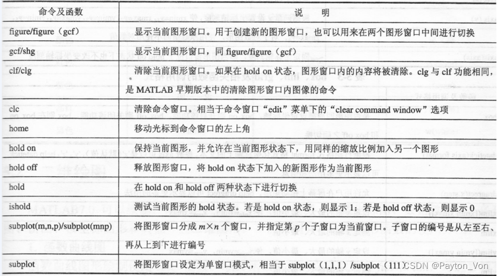
hold on
保持当前图形，并允许在当前图状态下，用同样的缩放比例加入另一个图形。
hold off
释放图形窗口，将hold on状态下加入的新图形作为当前图形
hold
在hold on 和 hold off两种状态下进行切换
is hold
测试当前图形的hold状态。若是hold on状态，则显示1；若hold off状态，则显示0.
subplot：子图函数
-
==subplot(m,n,p)== 将当前图窗划分为 m×n 网格，并在 p 指定的位置创建坐标区。——==subplot(mnp)==
-
subplot(m,n,p,==‘replace’==) 删除位置 p 处的现有坐标区并创建新坐标区。（默认就会覆盖原图）
子窗口的编号是从左至右、再从上到下进行编号1
2
3
4
5
6
7
8
9
10
11
12
13
14
15
16
17
18
19
20>> subplot(2,2,1)
x = linspace(0,10);
y1 = sin(x);
plot(x,y1)
title('Subplot 1: sin(x)')
subplot(2,2,2)
y2 = sin(2*x);
plot(x,y2)
title('Subplot 2: sin(2x)')
subplot(2,2,3)
y3 = sin(4*x);
plot(x,y3)
title('Subplot 3: sin(4x)')
subplot(2,2,4)
y4 = sin(8*x);
plot(x,y4)
title('Subplot 4: sin(8x)')输出：
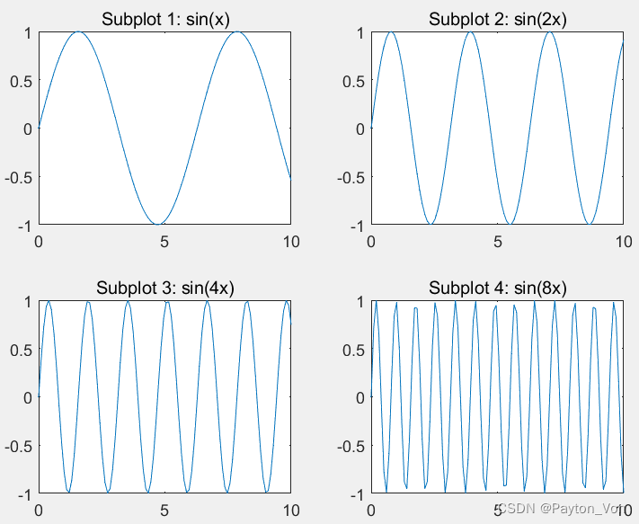
可绘制大小不同的子图：
1 | |
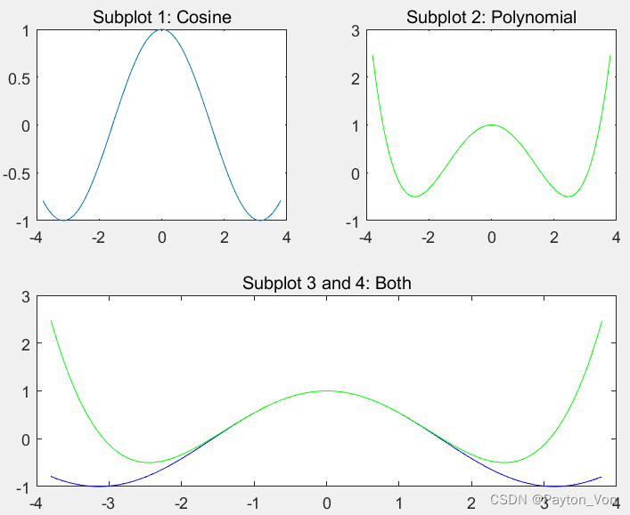
单窗口模式相当于subplot(1,1,1)
推荐使用：
tiledlayout
2.坐标轴、刻度和图形窗口
axis
设定坐标轴范围和纵横比
- axis(limits) 指定当前坐标区的范围。以包含 4 个、6 个或 8 个元素的向量形式指定范围。
axis([0 2*pi -1.5 1.5])——更改坐标轴范围，使 x 轴的范围从 0 到 2π，y 轴的范围从 -1.5 到 1. - axis style 使用预定义样式设置轴范围和尺度。
style — 坐标轴范围和尺度
tight | padded | fill | equal | image | square | vis3d | normal
详见doc文档 - axis mode 设置 MATLAB® 是否自动选择范围
mode — 用来确定坐标轴范围的手动、自动或半自动选择
manual | auto | 'auto x' | 'auto y' | 'auto z' | 'auto xy' | 'auto xz' | 'auto yz'
详见doc - axis visibility，其中 visibility 为 off，即关闭坐标区背景的显示。而坐标区中的绘图仍会显示。visibility 的默认值为 on，即显示坐标区背景。
- axis(axis)固定坐标轴刻度，即当图形窗口位于hold on状态下也不该百年坐标轴刻度。
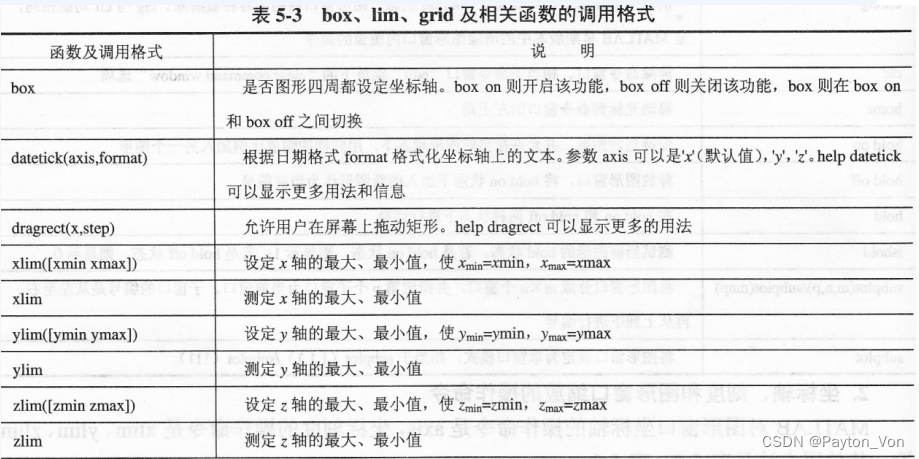
3.线型、点型及颜色参数
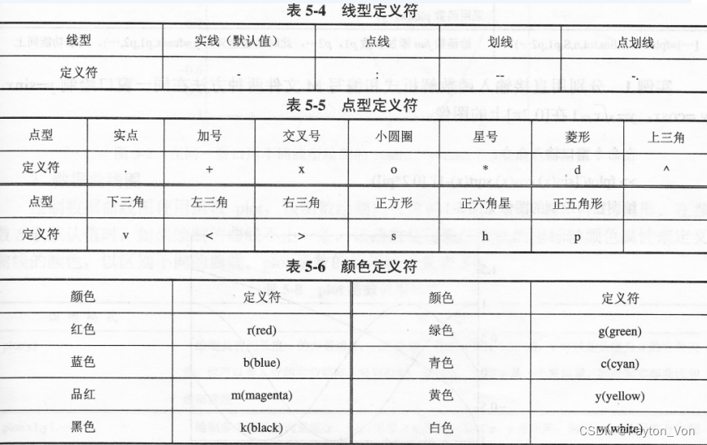
二、二维绘图
1.数据曲线图
plot函数
-
plot(X,Y,LineSpec)使用指定的线型、标记和颜色创建绘图。 -
plot(X1,Y1,LineSpec1,...,Xn,Yn,LineSpecn)可为每个 x-y 对组指定特定的线型、标记和颜色。您可以对某些 x-y 对组指定 LineSpec，而对其他对组省略它。例如，plot(X1,Y1,"o",X2,Y2)对第一个 x-y 对组指定标记，但没有对第二个对组指定标记。 -
指定线型、颜色和标记
plot(x,y1,'g',x,y2,'b--o',x,y3,'c*')——第一条曲线使用绿色线条，不带标记。第二条曲线使用蓝色虚线，带圆形标记。第三条曲线只使用青蓝色星号标记。 -
指定线宽、标记大小和标记颜色
1
2
3
4
5
6
7
8
9x = -pi:pi/10:pi;
y = tan(sin(x)) - sin(tan(x));
figure
plot(x,y,'--gs',...
'LineWidth',2,...
'MarkerSize',10,...
'MarkerEdgeColor','b',...
'MarkerFaceColor',[0.5,0.5,0.5])MarkerSize等详见doc文档 -
添加标题和轴标签
1
2
3
4
5
6
7
8x = linspace(0,10,150);0
y = cos(5*x);
figure
plot(x,y,'Color',[0,0.7,0.9])
title('2-D Line Plot')
xlabel('x')
ylabel('cos(5x)')
2. 函数曲线图
fplot
-
fplot(f,xinterval)将在指定区间绘图。将区间指定为[xmin xmax]形式的二元素向量。 -
fplot(funx,funy) 在默认区间 [-5 5]（对于 t）绘制由
x = funx(t)和y = funy(t)定义的曲线。 -
fplot(funx,funy,tinterval)将在指定区间绘图。将区间指定为[tmin tmax]形式的二元素向量。 -
fplot(___,LineSpec)指定线型、标记符号和线条颜色。例如，'-r'绘制一根红色线条。在上述语法中的任何输入参数组合后使用此选项。3.极坐标图和对数坐标图
-
grid on打开背景网格 -
grid off关闭背景网络polar极坐标函数 -
polar(wheta,rho)绘制极坐标函数rho=f(theta)的图像，S确定曲线的线型、点型、颜色
推荐使用polarplot
详见doc文档loglog：双对数刻度图 -
loglog(X,Y)在 x 轴和 y 轴上应用以 10 为底的对数刻度来绘制 x 和 y 坐标。 -
loglog(X,Y,LineSpec)使用指定的线型、标记和颜色创建绘图。 -
loglog(X1,Y1,LineSpec1,...,Xn,Yn,LineSpecn)可为每个 x-y 对组指定特定的线型、标记和颜色。您可以对某些 x-y 对组指定 LineSpec，而对其他对组省略它。例如，loglog(X1,Y1,'o',X2,Y2)对第一个 x-y 对组指定标记，但没有对第二个对组指定标记。semilogx：对数坐标semilogx(y)：绘制单轴对数坐标图形，纵轴为线性坐标，横轴为对数坐标。
4.条形图
bar(y)
bar(y) 创建一个条形图，y 中的每个元素对应一个条形。
- 要绘制单个条形序列，请将 y 指定为长度为 m 的向量。这些条形沿 x 轴从 1 到 m 依次放置。
- 要绘制多个条形序列，请将 y 指定为矩阵，每个序列对应一列。
1 | |
1 | |
bar(x,y) 在 x 指定的位置绘制条形。
1 | |
注：bar还可以有第三个参数，进行各种其他细节操作，详见doc
5.火柴杆图
stem(y)
stem(Y) 将数据序列 Y 绘制为从沿 x 轴的基线延伸的针状图。各个数据值由终止每个针状图的圆指示。
-
如果 Y 是向量，x 轴的刻度范围是从 1 至 length(Y)。
-
如果 Y 是矩阵，则 stem 将根据相同的 x 值绘制行中的所有元素，并且 x 轴的刻度范围是从 1 至 Y 中的行数。
stem(x,y)可指定，x轴显示范围其他更多用法见doc
6.饼图(pie)
pie(x)
pie(X) 使用 X 中的数据绘制饼图。饼图的每个扇区代表 X 中的一个元素。
-
如果 sum(X) ≤ 1，X 中的值直接指定饼图扇区的面积。如果 sum(X) < 1，pie 仅绘制部分饼图。
-
如果 sum(X) > 1，则 pie 通过 X/sum(X) 对值进行归一化，以确定饼图的每个扇区的面积。
1 | |
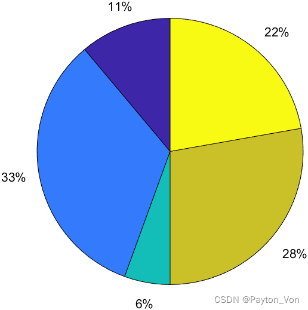
1 | |
labels可以改变饼图的文本标签
设置图例：
在元胞数组 labels 中指定每个饼图扇区的说明。按照您在 x 中指定数据的顺序指定说明。
labels = {'Product A','Product B','Product C'};
在饼图下方显示水平图例。将包含在 labels 中的说明传递给 legend 函数。将图例的 Location 属性设置为 “southoutside”，并将其 Orientation 属性设置为 “horizontal”。
legend(labels,'Location','southoutside','Orientation','horizontal')
7.散点图(scatter)
scatter(x,y,Sz,c)
在向量 x 和 y 指定的位置创建一个包含圆形标记的散点图
- 要绘制一组坐标，请将 x 和 y 指定为等长向量;
- 要在同一组坐标区上绘制多组坐标，请将 x 或 y 中的至少一个指定为矩阵。
Sz——指定圆圈大小
c——指定圆颜色
例子：
1 | |
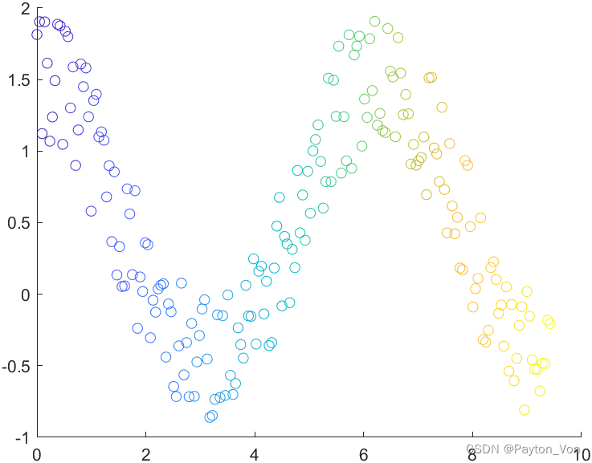
8.数据直方图
hist
hist(x)
- 基于向量 x 中的元素创建直方图条形图。x 中的元素有序划分入 x 轴上介于 x 的最小值和最大值间的 10 个等间距 bin 中。
- hist 将 bin 显示为矩形，这样每个矩形的高度就表示 bin 中的元素数量。
- 若
x为一个矩阵，则逐列操作
N = hist(Y,M)
M是一个标量，表明使用M个箱子。（就像上面所说的如果不指定，默认是10个箱子）
N = hist(Y,X)
其中x是一个向量，返回x的长度个以x的元素为中心的容器内的，Y的分布情况。
例子：
1 | |
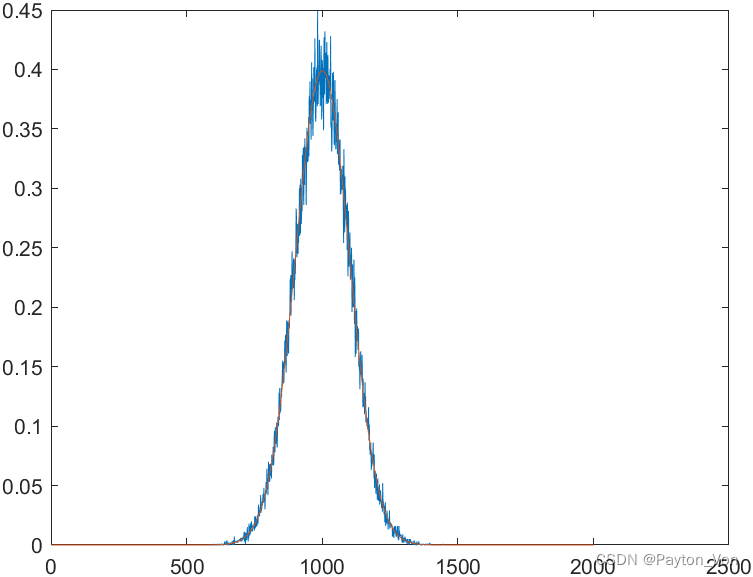
三、三维绘图
1.三维网格图和曲面图
meshgrid
二维或三维网络
-
[X,Y] = meshgrid(x,y)基于向量 x 和 y 中包含的坐标返回二维网格坐标。X 是一个矩阵，每一行是 x 的一个副本；Y 也是一个矩阵，每一列是 y 的一个副本。坐标 X 和 Y 表示的网格有 length(y) 个行和 length(x) 个列。1
2
3x = 1:3;
y = 1:5;
[X,Y] = meshgrid(x,y)1
2
3
4
5
6
7X =
1 2 3
1 2 3
1 2 3
1 2 3
1 2 3Y =
1 1 1
2 2 2
3 3 3
4 4 4
5 5 51
例子：绘制曲面图
1 | |
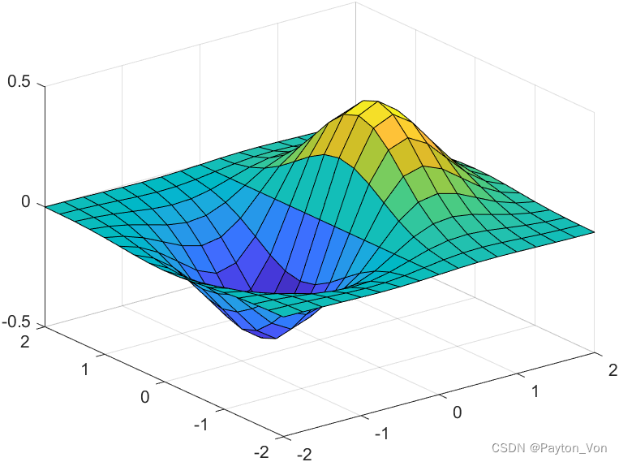
-
[X,Y,Z] = meshgrid(x,y,z)返回由向量 x、y 和 z 定义的三维网格坐标。X、Y 和 Z 表示的网格的大小为length(y)×length(x)×length(z)。
mesh网格曲面图
mesh(X,Y,Z) 创建一个网格图，该网格图为三维曲面，有实色边颜色，无面颜色。该函数将矩阵 Z 中的值绘制为由 X 和 Y 定义的 x-y 平面中的网格上方的高度。边颜色因 Z 指定的高度而异。
mesh(___,C) 进一步指定边的颜色。
例子：
1 | |

2.三维曲线图
plot3(x,y,z,S)
三维曲线图
以参数S确定的线型属性绘制三维点集（Xi,Yi,Zi）确定的曲线。
x,y,z为相同大小的向量或矩阵。
3.三维条形图
bar3
eg.
1 | |
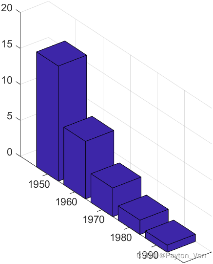
4.三维散点图
scatter3(X,Y,Z,S)
在 X、Y 和 Z 指定的位置显示圆圈,S指定圆圈大小
5.三维等值线图
contour3
四、其他绘图命令
imagesc
使用缩放颜色显示图像
contour
矩阵的等高线图
imwrite
将图像写入图形文件
1 | |
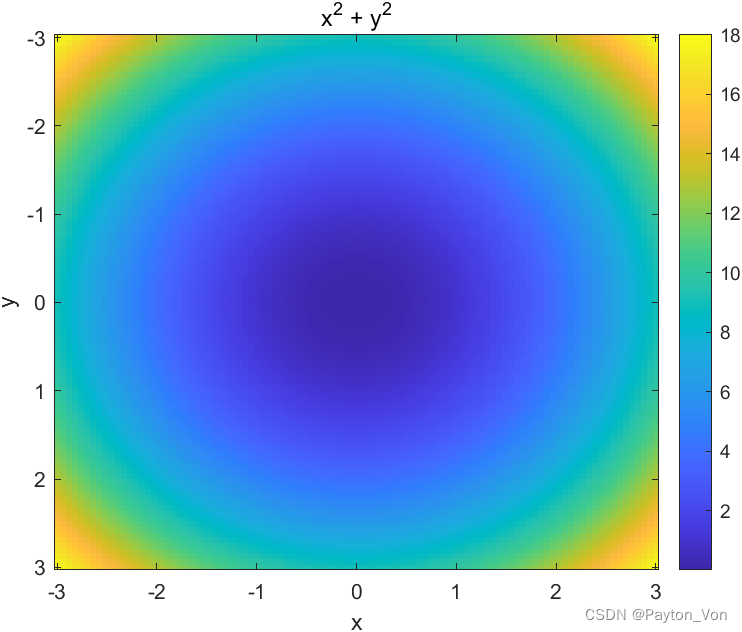
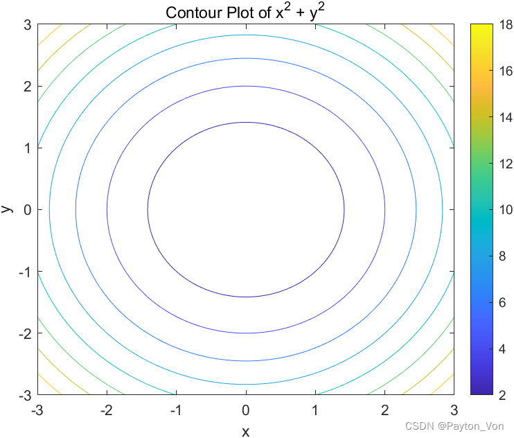
plotyy
双纵轴绘图
stairs
阶梯图
area
面积图
compass
矢量图
text
在图中添加文本
[x,y,z]=sphere(n)
绘制球体
shading interp
连续曲面
peaks
测试三维绘图
Alpha
设置透明度
Imread
将图片读为数组